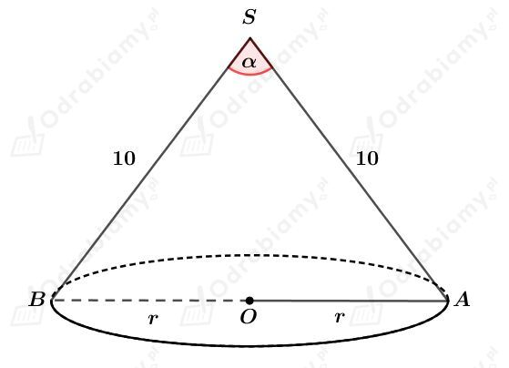
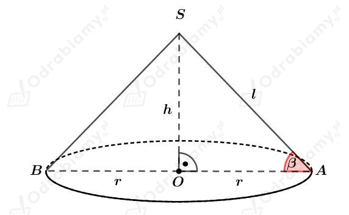
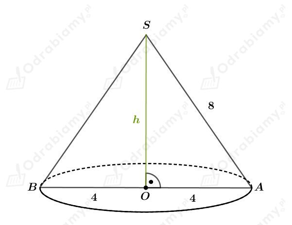
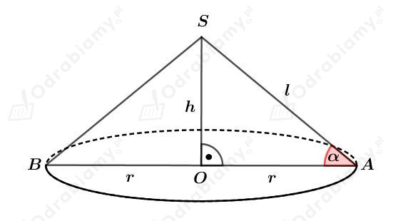

Rysunek:

Wiedząc, że pole powierzchni podstawy jest równe 50𝜋 cm2 otrzymujemy:
Zatem
Przekrój osiowy stożka ABS jest trójkątem równoramiennym o ramionach długości 10 cm i podstawie długości 10√2 cm.
Korzystając ze związku między długościami boków w trójkącie o kątach 45o, 45o, 90o wiemy, że
| Objętość stożka o promieniu podstawy r i wysokości długości h wyraża się wzorem: gdzie Pp jest polem powierzchni podstawy stożka. |
Rysunek:

a)
Wiemy, że
oraz
Korzystając z funkcji sinus otrzymujemy:
Korzystając z twierdzenia Pitagorasa dla trójkąta OAB mamy:
Obliczmy objętość tego stożka. Mamy:
b)
Wiemy, że
oraz
Korzystając z funkcji tangens otrzymujemy:
Korzystając z twierdzenia Pitagorasa dla trójkąta OAB mamy:
Zatem
Obliczmy objętość tego stożka. Mamy:
| Objętość stożka o promieniu podstawy r i wysokości długości h wyraża się wzorem: gdzie Pp jest polem powierzchni podstawy stożka. |
a)
Przekrój osiowy stożka to trójkąt równoramienny o polu równym 16√3 cm2. Niech a będzie długością boku tego trójkąta. Korzystając ze wzoru na pole trójkąta równobocznego mamy:
Rysunek:

Korzystając z twierdzenia Pitagorasa dla trójkąta OAS mamy:
Wyznaczmy objętość tego stożka. Mamy:
b)
Rysunek:

Pole powierzchni podstawy tego stożka jest równe 27𝜋 cm2. Mamy stąd:
Objętość tego stożka jest równa 27𝜋 cm3. Mamy stąd
Wyznaczmy tangens kąta 𝛼. Mamy:
a stąd otrzymujemy